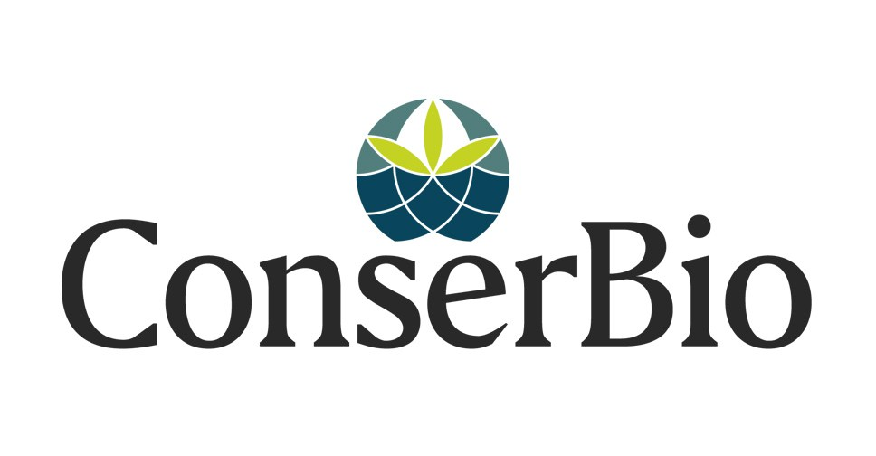

Home
Visitors from the Deep
Research
Art
Events
Learn
Emergency
Credits
About
Guardians of the Deep
Here are some of the people and organisations who have made this endeavor possible.
Thank you and thanks for the amazing work you are doing.
Nelson Mandela University
Rufford Foundation
Conserbio
